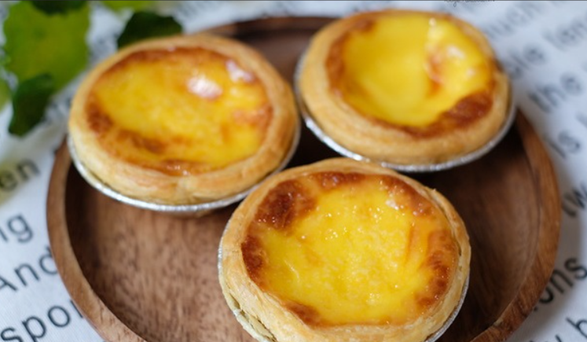
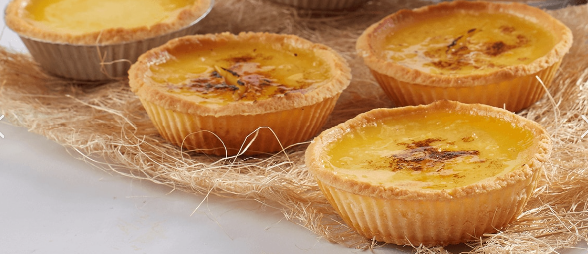
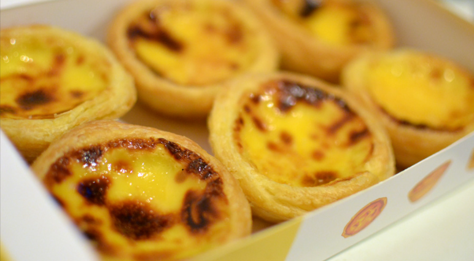
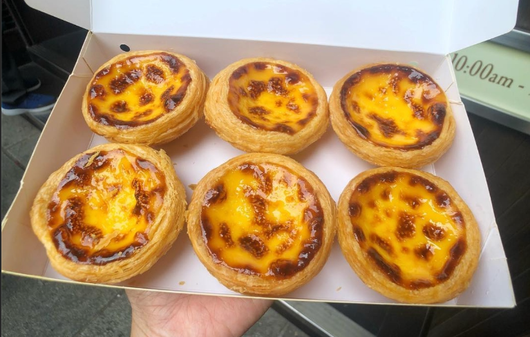

Home
ทาร์ตไข่




วันนี้เราขอมาเอาใจสายหวาน กับ สูตรขนม ที่ต้องบอกเลยว่าใครได้กินก็ต้องติดใจ ยิ่งใครเป็นสาวกเมนูไข่ หลงรักความคัสตาร์ด ครีมมี่ๆ บวกกับกลิ่นไข่แดงหอมๆ ต้องร้องกรี๊ดให้เมนูนี้ แจกสูตร วิธีทำ ทาร์ตไข่ สูตรกลมกล่อม พร้อมเทคนิคหน้าเงา เนื้อเนียน ไข่ไม่ฟู ขั้นตอนการทำก็ง่ายแสนง่าย ใช้วัตถุดิบแค่ไม่กี่อย่างเท่านั้น ใครทำกินที่บ้านรับรองว่าหมดเรียบในเวลาไม่นาน หรือใครอยากเอาไปทำขายก็เห็นกำไรงามๆ อยู่ตรงหน้าแล้วจ้าา เอาล่ะ ถ้าอยากรู้กันแล้วว่า ทาร์ตไข่ ที่ว่า จะมีขั้นตอนและวิธีการทำอะไรบ้าง ก็ไปดูสูตรกันเลยจ้าา
ส่วนผสม ทาร์ตไข่
- นมสดจืด 300 กรัม
- น้ำตาลทราย 150 กรัม (ปรับเพิ่มลดได้ 140-160 กรัม)
- วิปปิ้งครีมแท้ หรือที่เรียกว่าแดรี่ครีม 700 กรัม
- กลิ่นวานิลลา 1 ช้อนชา
- ไข่แดง 7 ฟอง (ถ้าใช้เบอร์ 0 ใช้ 6 ฟอง / ถ้าเบอร์ 2 ใช้ 7 ฟอง )
- เกลือ 1/4 ช้อนชา
วิธีทำ ทาร์ตไข่
- ก่อนทำให้เปิดวอร์ทเตาอบไว้ที่อุณหภูมิ 180 องศา ไฟบนล่าง และเปิดพัดลมด้วยค่ะ
- นำถ้วยทาร์ตสำเร็จรูป ออกจากตู้เย็น แล้วนำมาวางเรียงในถาดที่จะใช้อบ เพื่อคลายความเย็น
- เทน้ำตาและเกลือ ลงในนมสด แล้วใช้ตะกร้อคนจนน้ำตาลละลายหมด
- พอน้ำตาลละลายหมดแล้ว ค่อยใส่วิปปิ้งครีม และกลิ่นวนิลลาลงไปผสม
- ใส่ไข่แดงลงไป ** ค่อยๆ คนอย่างเบามือที่สุด คนน้อยๆ ไม่ต้องคนเยอะ
- เอาส่วนผสมมากรอง 1 รอบ แล้วใช้ตะกร้อคนเบาๆ อีกครั้ง
- ใช้ที่หยอดแป้งหยอดขนมลงในแป้งทาร์ต ให้ขนมอยู่พอดีกับขอบแป้งทาร์ต (หรือใช้ภาชนะที่มีปากสำหรับเทก็ได้)
- นำเข้าอบ 30 นาทีโดยประมาณ สังเกตที่สีของหน้าขนมเอาค่ะ ชอบเข้มมาก เข้มน้อย เลือกเอาได้เลย
คำแนะนำ เคล็ดลับพิเศษ
- น้ำตาลใช้แบบปั่นละเอียดหรือไม่ปั่นก็ได้ แต่สำคัญต้องผสมให้น้ำตาลละลาย ดังนั้นอยากให้ละลายง่ายต้องใช้ละเอียด
- ถ้วยทาร์ตปกติซื้อมาจะแช่ฟรีซแข็งไว้ แต่ถ้าเราจะทำต้องเอาออกจากช่องฟรีซลงมาช่องปกติให้คลายแข็งก่อน และก่อนจะลงมือทำให้เอาทาร์ตออกจากตู้เย็นมาเรียงใส่ถาดก่อนให้คลายเย็น แป้งทาร์ตจะได้ไม่แฉะเวลาอบ
- ถ้าอยากให้หน้าเงา ห้ามคนไข่แรง เพราะถ้าคนไข่แรงไข่จะขึ้นฟูเวลาอบ หน้าจะไม่เงา เนื้อก็ไม่เนียน
- สาเหตุที่ผสมน้ำตาลกับนมให้ละลายก่อนใส่วิปครีม เพราะเราไม่ต้องการตีวิปครีมให้ฟู
- สูตรนี้ไม่ลดต้นทุน เน้นอร่อย วิปครีมเลยเยอะค่ะ รสชาติจะหอมๆ มันๆ กลมกล่อม
ข้อมูลโภชนาการ
รายละเอียดข้อมูลโภชนาการ
| 🍞🍗🥚คุณค่าทางโภชนาการที่ได้รับ🍞🍗🥚 |
| พลังงานทั้งหมด | 170 |
| ไขมันทั้งหมด | 16% |
| ไขมันอิ่มตัว | 0% |
| ไขมันไม่อิ่มตัวเชิงซ้อน |
| ไขมันไม่อิ่มตัวเชิงเดี่ยว |
| ไขมันทราน |
| คลอเรสเตอรอล | 22% |
| โซเดียม | 4% |
| โพแทสเซียม | 0% |
| คาร์โบไฮเดรตทั้งหมด | 6% |
| ใยอาหาร 0.1 g | 1% |
| น้ำตาล |
| โปรตีน | 6% |